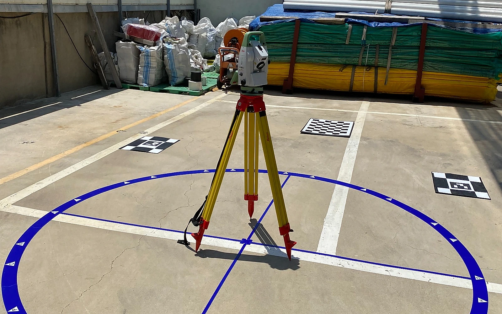
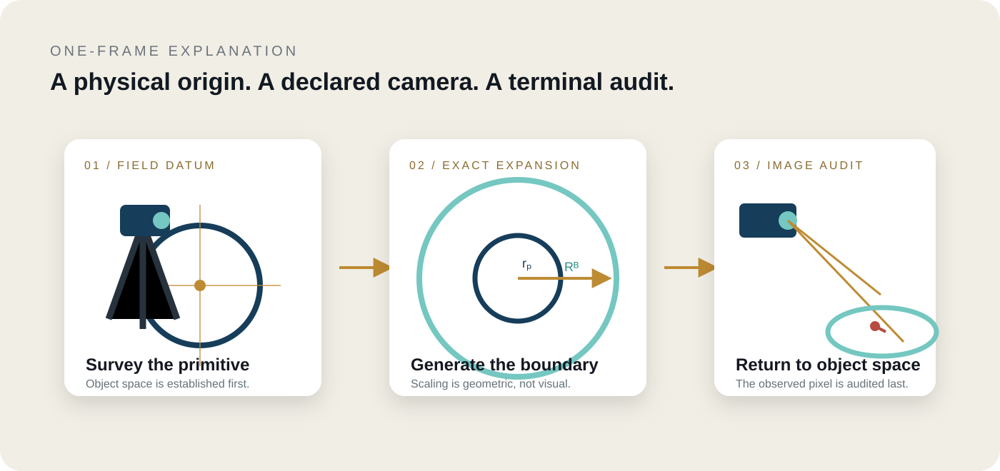

01
Surveyed primitive
Fit the physical generator in object space.
The boundary begins with surveyed points—not an image overlay.
 JoosAtlasCASE 001 / SPATIAL EVIDENCE
JoosAtlasCASE 001 / SPATIAL EVIDENCE

CASE 001 · PAPER UNDER REVIEW
Can a single oblique image test whether a field-generated design boundary has been preserved?
THE RESEARCH QUESTION
The case separates the system into roles: the total station establishes object space, exact scaling generates the design boundary, the camera observes, and an independent audit decides what the final claim can support.

THEORETICAL CORE
The formulas are shown at the level needed to understand the metrology. Calibration values, implementation thresholds and full terminal results remain outside this public page.
The boundary begins with surveyed points—not an image overlay.
The design boundary is generated in metric space before the image is consulted.
The intrinsic mapping and exterior orientation are explicit parts of the evidence chain.
The selected pixel becomes a world ray; the declared support surface determines its 3D intersection.
The sign is retained so inward and outward deviations are not collapsed into a single absolute error. Interpretation follows the manuscript convention.
FIELD REALIZATION
The composite below links the metric field frame, camera placements, total-station references and overhead records. It is included so visitors can see the system before reading its outputs.

SELECTED OBJECT-SPACE EVIDENCE
The explorer shows selected 3-cm sessions from central, lateral and depth placements. These figures concern total-station verification of the generated 5.5 m boundary; they do not disclose the full image-response pipeline or terminal audit table.

The selected boundary checks remain close to the nominal radius, supporting the physical generator-to-boundary stage.
The number and distribution of visible TS checks vary across central, lateral and depth configurations.
Boundary points, camera-side sighting points and other control observations occupy different roles and heights.
CLAIM BOUNDARY
A credible research companion should make its limits visible. The paper remains the authoritative source for methods, full results and uncertainty.
Do not claim what the measurement chain cannot support.
RELEASE STATUS
Upon formal release, this page can add the DOI, reproducibility package, code and full supplementary crosswalk.